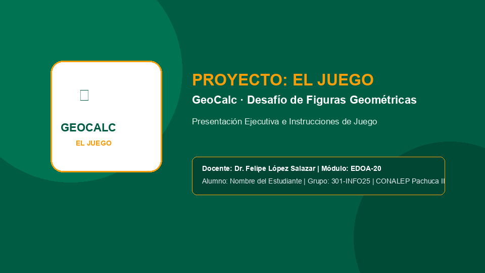
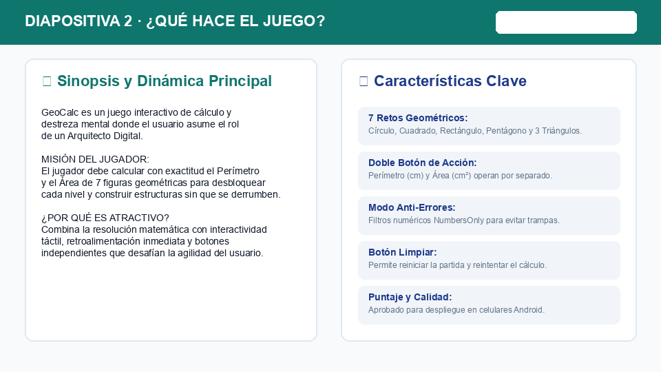
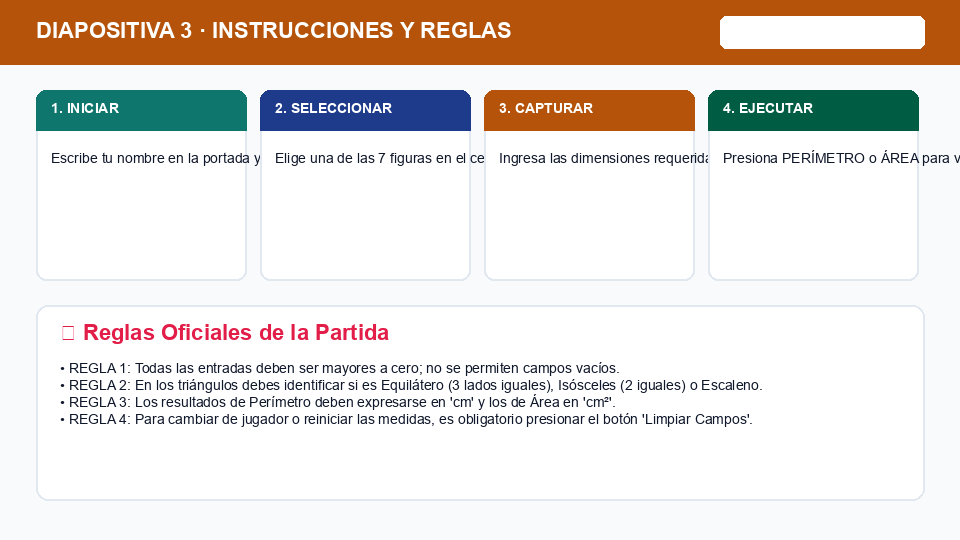
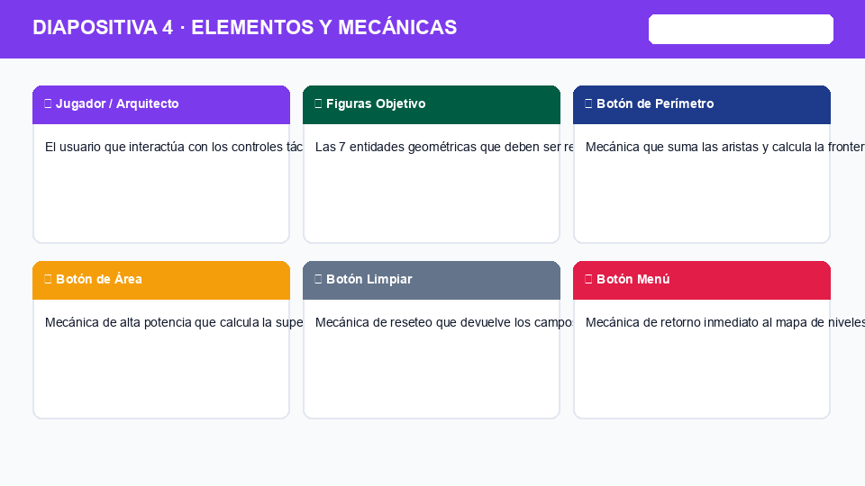
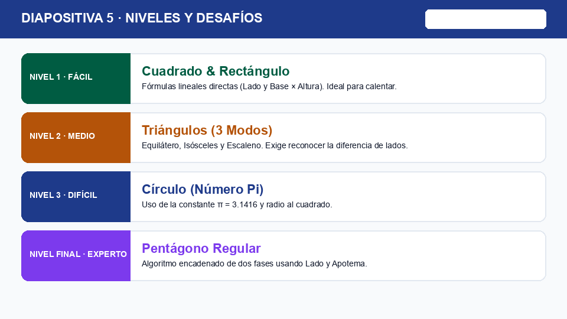
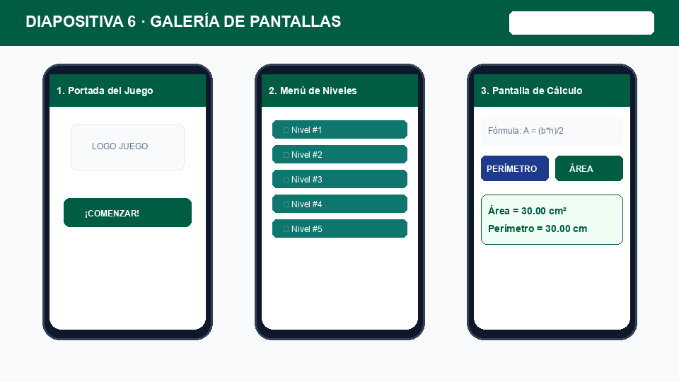
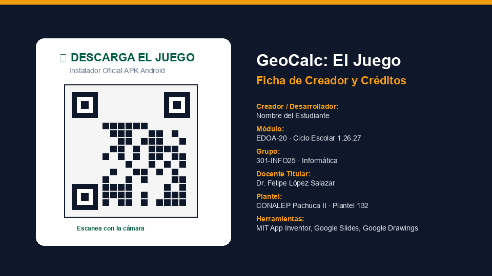

Presentación Ejecutiva de "El Juego"
Guía interactiva paso a paso para cañón de aula: cómo estructurar las 7 diapositivas de la aplicación móvil GeoCalc en Google Slides.
⏱️ Dictado Oficial en Pantalla (10 min)
📝 Dictado en Libreta Técnica
"En la industria tecnológica contemporánea, un producto de software no se distribuye sin su documentación visual y su Pitch Deck. A través de Presentaciones de Google, el estudiante diseña una suite ejecutiva de siete diapositivas estandarizadas que comunican la propuesta de valor, las mecánicas de juego, la galería de pantallas reales y el código QR de instalación del paquete APK."
🎯 Criterios de Escritura:
- Título: Centrado · Tamaño destacado con pluma de color.
- Cuerpo: Justificado de margen a margen · Letra limpia.
- Palabras Clave: Subrayar Pitch Deck, Google Slides, Mecánicas y APK.
🗣️ Frase Gancho del Docente:
"El lunes descansamos por la Revolución Mexicana, pero hoy arrancamos la Semana 14 con todo: su aplicación ya funciona en el teléfono, ahora vamos a documentarla como si fuéramos un estudio profesional de videojuegos que va a lanzar su juego al mercado."
👉 Abrir slides.new en Google Chrome.
👉 Nombrar archivo: El_Juego_GeoCalc_Apellido_Nombre
🗺️ Mapa de las 7 Diapositivas Requeridas
Cada alumno construirá en Google Slides exactamente estas 7 láminas:
| Diapositiva | Nombre / Sección | Contenido Esencial que se Calificará |
|---|---|---|
| Slide 1 | Portada Oficial | Ícono de Dibujos de Google, título en negrita, subtítulo y datos de CONALEP. |
| Slide 2 | ¿Qué Hace el Juego? | Sinopsis del Arquitecto Digital, cálculo de áreas y perímetros en tiempo real. |
| Slide 3 | Instrucciones y Reglas | Flujo en 3 pasos (Selección, Entrada, Botón) + Reglas (3 vidas y 60 segundos). |
| Slide 4 | Personajes y Elementos | El Jugador, las 7 figuras y los botones Perímetro (verde), Área (azul) y Limpiar. |
| Slide 5 | Niveles y Dificultad | Curva de 4 retos: Fácil (Círculo), Medio (Pentágono), Difícil y Contra Reloj. |
| Slide 6 | Galería de Mockups | 3 Smartphones flotantes con capturas reales de su celular (Portada, Menú y Cálculo). |
| Slide 7 | Créditos y Código QR | Ficha técnica del estudiante, CCT 13DPT0002Y y Código QR oficial de descarga APK. |
Lámina 1: Portada Oficial del Juego
🎨 Elementos Obligatorios:
- Ícono Central: Insertar el logotipo en PNG diseñado en Dibujos de Google.
- Título del Juego:
GeoCalc · La Aventura Matemática(Negrita, tamaño 44+). - Subtítulo:
Videojuego Móvil Educativo · Android APK. - Pie Institucional:
CONALEP Pachuca II · EDOA-20 · Grupo 301-INFO25.
💡 Cómo Guiarlos en Aula:
"No usen fondos blancos aburridos. Pongan un fondo verde oscuro o gris azulado institucional y aseguren que el título contraste con letras blancas o doradas."

Ejemplo Visual de Referencia · Diapositiva 1Lámina 2: ¿Qué Hace el Juego? (Sinopsis)
📖 Estructura Narrativa en 3 Puntos:
- 1. Premisa del Jugador: Conviértete en el Arquitecto Digital y supera retos geométricos resolviendo fórmulas en tiempo real.
- 2. Dinámica Principal: Calcula perímetros y áreas instantáneas para desbloquear figuras y avanzar de pantalla.
- 3. Características Clave: 7 Figuras geométricas, respuestas inmediatas con unidades (cm y cm²) y funcionamiento 100% offline.
💡 Cómo Guiarlos en Aula:
"Expliquen qué soluciona el juego: ayuda a que cualquier estudiante de bachillerato aprenda geometría jugando con su celular en lugar de aburrirse con hojas de papel."

Ejemplo Visual de Referencia · Diapositiva 2Lámina 3: Instrucciones y Reglas de Juego
🎮 Pasos de Partida y Reglas:
- Paso 1 (Selección): Toca una figura en el Menú Principal.
- Paso 2 (Entrada): Teclea las medidas requeridas en las cajas de texto (TextBox).
- Paso 3 (Acción): Presiona el botón verde (Perímetro) o el botón azul (Área) para sumar puntos.
- Reglas Oficiales: 3 Vidas por partida, tiempo límite de 60 segundos y penalización por error de cálculo.
💡 Cómo Guiarlos en Aula:
"Maqueten esto con 3 columnas o cajas redondeadas para los pasos, y abajo una franja roja o amarilla destacando las 3 vidas del jugador."

Ejemplo Visual de Referencia · Diapositiva 3Lámina 4: Personajes y Mecánicas de Interfaz
🧩 Elementos de Juego:
- El Jugador: El Arquitecto Digital (Tú) que domina los algoritmos.
- Figuras Objetivo: Círculo, Cuadrado, Rectángulo, Pentágono y los 3 Triángulos.
- Botón Perímetro (Verde): Calcula el contorno en cm (+100 puntos).
- Botón Área (Azul): Procesa la superficie en cm² (+250 puntos).
- Botones Auxiliares: Limpiar (resetea valores) y Menú (vuelve al inicio).
💡 Cómo Guiarlos en Aula:
"Resalten los dos botones con los mismos colores que usaron en App Inventor: verde para Perímetro y azul para Área."

Ejemplo Visual de Referencia · Diapositiva 4Lámina 5: Niveles y Curva de Dificultad
🧗 Los 4 Retos Progresivos:
- Nivel 1 (Fácil): Círculo y Cuadrado · Medidas enteras de 1 solo dígito.
- Nivel 2 (Medio): Rectángulo y Pentágono · Uso de decimales y cálculo con apotema.
- Nivel 3 (Difícil): Triángulos Isósceles y Escaleno · Múltiples variables y lados asimétricos.
- Nivel 4 (Experto): Desafío Contra Reloj · Resolver 5 figuras consecutivas en menos de 90 segundos.
💡 Cómo Guiarlos en Aula:
"Muestren la curva de aprendizaje: empezamos fácil con círculos y terminamos con el desafío contra reloj del pentágono y triángulos."

Ejemplo Visual de Referencia · Diapositiva 5Lámina 6: Galería de Pantallas (Mockups)
📱 3 Teléfonos con Capturas Reales:
- Teléfono 1 (Izquierda): Pantalla de bienvenida (
Screen1) con su portada e ícono. - Teléfono 2 (Centro): Menú Principal con los 7 botones de figuras geométricas.
- Teléfono 3 (Derecha): Pantalla de cálculo en acción con resultados en
cmycm². - Efecto Profesional: Borde fino de 1px y sombra paralela (*Opciones de formato > Sombra paralela*).
💡 Cómo Guiarlos en Aula:
"No peguen capturas chuecas. Péguenlas alineadas horizontalmente, recortando barras de estado si tienen poca batería."

Ejemplo Visual de Referencia · Diapositiva 6Lámina 7: Créditos y Código QR Oficial
🏷️ Ficha de Lanzamiento:
- Código QR Oficial: Pegar la imagen del código QR generado en App Inventor (*Build > Android App (.apk)*).
- Llamado a la Acción (CTA): ¡Escanea con tu teléfono e instala la app GeoCalc!
- Desarrollador Líder: Nombre y apellidos completos del estudiante.
- Institución: CONALEP Plantel Pachuca II · CCT 13DPT0002Y.
- Módulo y Grupo: EDOA-20 · Grupo 301-INFO25 · Semestre 1.26.27.
💡 Cómo Guiarlos en Aula:
"El código QR debe verse nítido para que cualquiera que apunte con la cámara de su celular descargue el archivo instalador de inmediato."

Ejemplo Visual de Referencia · Diapositiva 7✅ Checklist de Salida y Sello 1 (Semana 14)
📋 Criterios de Acreditación:
- ✔ 7 Diapositivas Completas: Portada, ¿Qué hace el juego?, Instrucciones, Elementos, Niveles, Mockups y QR.
- ✔ Nomenclatura Oficial: Archivo nombrado
El_Juego_GeoCalc_Apellido_Nombre. - ✔ Contraste Visual: Textos legibles, tipografía uniforme y sin errores ortográficos.
- ✔ Drive Compartido: Guardado en la carpeta de Google Drive del alumno.
👉 SELLO 1 REGISTRADO EN LISTA
El estudiante muestra sus 7 diapositivas maquetadas en pantalla completa y obtiene su primer sello de la Semana 14.
⏭️ Próxima Sesión (Jueves · 2 Horas):
• Hora 2: Hipervínculos internos (Ctrl + K) para hacer los botones interactivos.
• Hora 3: Coevaluación en pares en laboratorio.